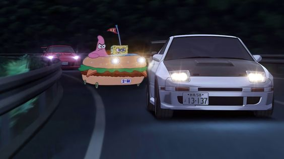
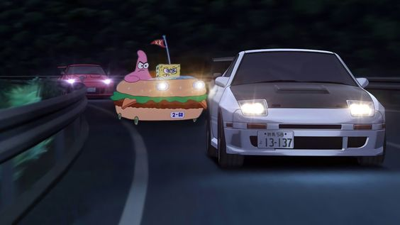

Cette manière de conduire lui permet de gagner du temps dans les virages pour gagner des courses

Le drift moderne tel qu'on le connaît aujourd'hui a émergé dans les montagnes du Japon dans les années 1970. Les jeunes pilotes japonais, inspirés par la course automobile et les dérives contrôlées des voitures, ont commencé à pratiquer cette technique sur des routes de montagne sinueuses comme le célèbre col de Hakone

Cependant, il est important de noter que le drift n'est pas une invention soudaine mais plutôt une évolution naturelle de la conduite sportive. Des techniques similaires ont été utilisées dans d'autres formes de course automobile, telles que la conduite sur neige et la dérive contrôlée sur terre, depuis de nombreuses années.